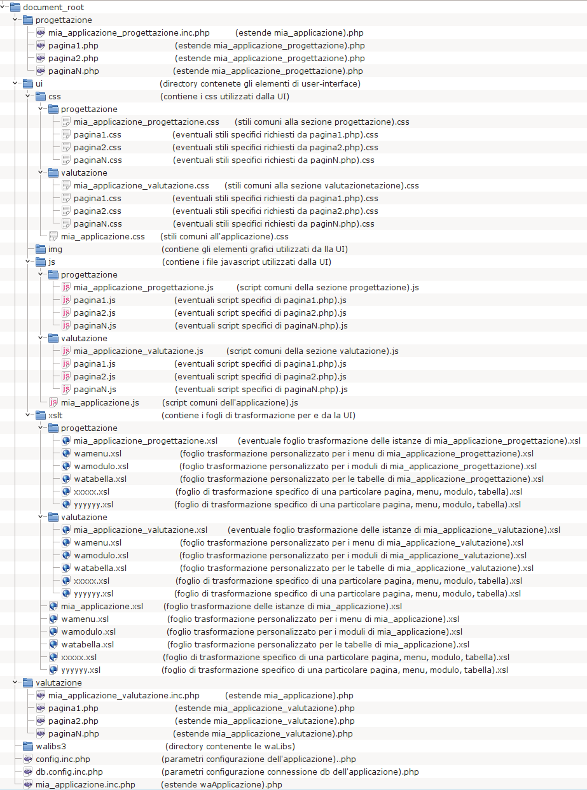

waLibs 3.x
Buone prassi - 2
Estendendo il concetto espresso al punto precedente, qualora la
vostra applicazione sia composta da più sezioni (ad esempio:
progettazione e valutazione), allora la struttura delle directory
dell'applicazione sarebbe bene che seguisse la traccia indicata
dalla figura sottostante.
Può darsi che la vostra applicazione non sia necessariamente così
complessa come nell'esempio sotto riportato (probabilmente non tutte le
pagine avranno bisogno di un proprio CSS specifico o XSL specifico).
Ma può anche darsi che lo sia assai di più, almeno come numero di
sezioni. Questo criterio fornisce una chiave di lettura tale per cui
anche in una applicazione molto complessa ogni collega sa quale è la
strada per trovare un file (provate a cercare una parola in un
dizionario non ordinato alfabeticamente!) e apre la strada a
possibili automazioni.
